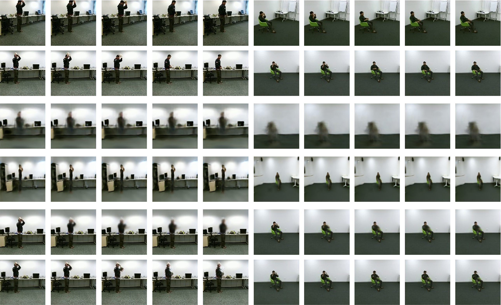

Pose-guided Generative Adversarial Net for Novel View Action Synthesis
| Code [Github] | Arxiv [Paper] |
Abstract
We focus on the problem of novel-view human action synthesis. Given an action video, the goal is to generate the same action from an unseen viewpoint. Naturally, novel view video synthesis is more challenging than image synthesis. It requires the synthesis of a sequence of realistic frames with temporal coherency. Besides, transferring the different actions to a novel target view requires awareness of action category and viewpoint change simultaneously. To address these challenges we propose a novel framework named Pose-guided Action Separable Generative Adversarial Net (PAS-GAN), which utilizes pose to alleviate the difficulty of this task. First, we propose a recurrent pose-transformation module which transforms action from the source view to the target view and generates novel view pose sequence in 2D coordinate space. Second, a well-transformed pose sequence enables us to separate the action and background in the target view. We employ a novel local-global spatial transformation module to effectively generate sequential video features in the target view using these action and background features. Finally, the generated video features are used to synthesize human action with the help of a 3D decoder. Moreover, to focus on dynamic action in the video, we propose a novel multi-scale action-separable loss which further improves the video quality. We conduct extensive experiments on two large-scale multi-view human action datasets, NTU-RGBD and PKU-MMD, demonstrating the effectiveness of PASGAN which outperforms existing approaches. environments.
Demo
Examples

Dataset
If you would like the pre-processed dataset version, please feel free to contact me at xianhang710@gmail.com